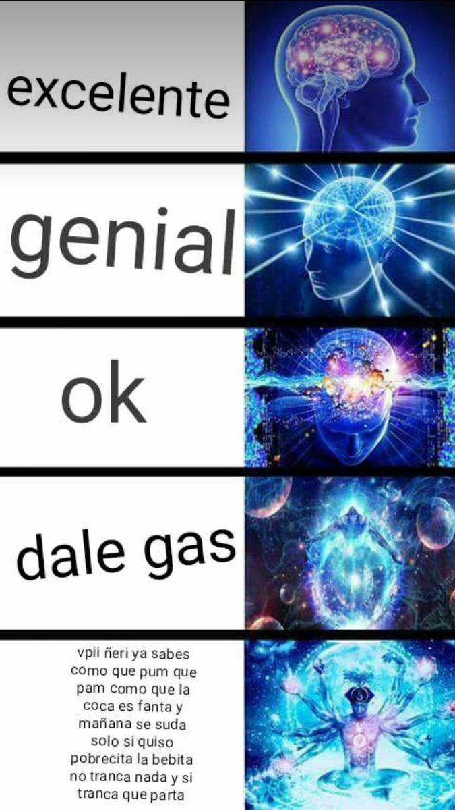

Uruguayan Spanish, also known as Rioplatense Spanish, is a dialect of Spanish spoken in Uruguay and parts of Argentina. It shares similarities with Argentine Spanish due to the historical and cultural connections between the two countries. However, Uruguayan Spanish has its unique features that make it distinct.
In Uruguayan Spanish, the pronunciation is generally clear and easy to understand. Some notable features include the aspiration of the letter "s" at the end of words, making it sound like "sh." For example, "gracias" may be pronounced as "graciah." The "y" and "ll" sounds are usually pronounced like the "zh" in the English word "measure."
In Uruguayan Spanish, the pronoun "vos" is commonly used instead of "tú" for the informal singular "you." The conjugation of verbs with "vos" is different from standard Spanish. For example, instead of "tú tienes" (you have), it's "vos tenés."
Lunfardo is a unique slang used in Uruguayan Spanish, especially in Montevideo (the capital city). It has its origins in the immigrant communities and the port areas. Lunfardo includes words from Italian, French, and other languages, making it a colorful and expressive aspect of Uruguayan Spanish.
Uruguayan culture places a strong emphasis on politeness and respect when speaking. Using "usted" (the formal singular "you") to address someone is common, especially with adults or in formal situations.
Perhaps the quintessential Uruguayan phrase. Vamo’ arriba means something like “Come on!”, and is used, normally, to encourage someone or to express happiness about something: ¡Ganamos el partido! ¡Vamo’ arriba!(We won the match! Come on!).
This popular Uruguayan expression means that something has no logic or makes no sense. The gollete is the neck of a bottle or bottleneck, so you're literally saying that something “has no neck”! Este asunto no tiene gollete (This issue has no solution).
"Che" is a quintessential Uruguayan interjection used to get someone's attention, similar to saying "Hey" or "Hey, you" in English. It's a common and friendly way of addressing someone, and you'll hear it often in casual conversations. For example, you might hear someone say, "Che, ¿me pasás la sal?" (Hey, can you pass me the salt?)
Literally meaning "Everything okay?" or "All good?" this expression is a standard way of asking someone how they are doing. It's a friendly and casual greeting commonly used in daily conversations. You can use it with friends, colleagues, or anyone you meet.
This expression is commonly used in Uruguay and Argentina, and it translates to "Okay" or "Sure." It's a versatile and informal way to agree with someone or indicate that you're on board with something. For example, if a friend asks if you want to go out for a coffee, you can reply with "¡Dale!" to show your agreement.